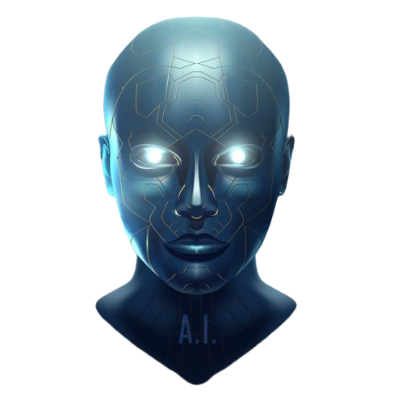

ABOUT
ALL ABOUT GENERATIVE AI!
The history of generative AI dates back to the mid-20th
century, with the
advent of early computational theories and the first experiments in
machine
learning. In the 1950s and 1960s, pioneers like
Alan
Turing explored the
potential of machines to mimic human thought and creativity, laying the
groundwork for later developments. One of the earliest forms of
generative
AI was the use of probabilistic models, such as Markov chains, to
generate
simple text sequences, like poetry and music.
The field took a significant leap forward in the 1990s and early
2000s with
the development of neural networks, particularly with the advent
of
deep
learning. Recurrent Neural Networks (RNNs) and Long Short-Term Memory
(LSTM)
networks allowed for the generation of more complex sequences of text,
enabling machines to generate coherent sentences and paragraphs.
The real breakthrough came in 2014 with the introduction of
Generative
Adversarial Networks (GANs) by Ian Goodfellow and his
colleagues. GANs
revolutionized generative AI by enabling the creation of realistic
images,
videos, and even audio by pitting two neural networks—a generator and a
discriminator—against each other.
